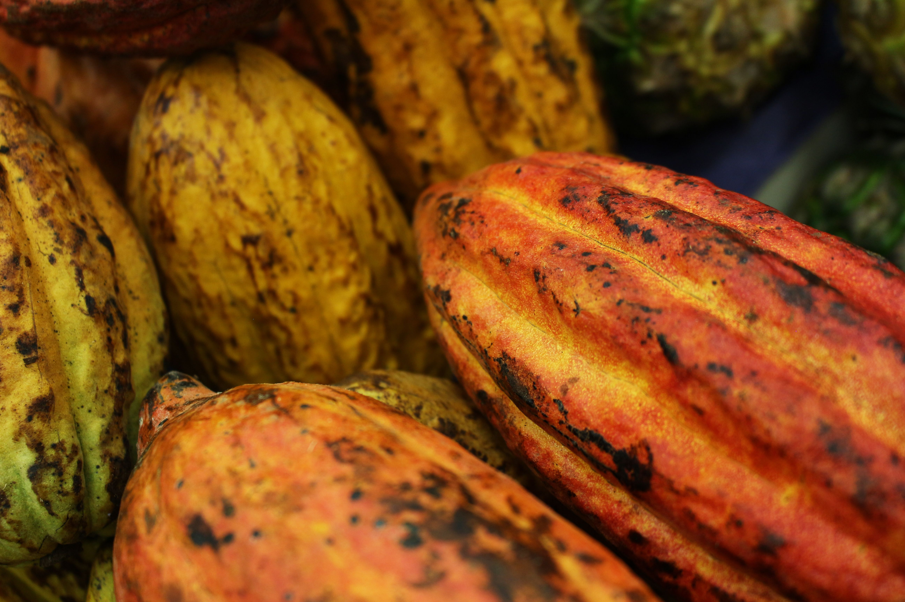

Maxime Ryckewaert
Researcher in Machine Learning/Artificial Intelligence for agricultural systems and environments
CIRAD — UMR AGAP Institut, GSP team Montpellier, France
Research Themes
Representation learning from complex biological signals. Spectral, temporal, and genomic data share a structural challenge: informative variation is entangled with noise, domain shifts, and missing modalities. My research develops transformer-based architectures and multivariate methods that learn compact, transferable representations, with explicit uncertainty quantification and interpretability constraints.
Multivariate and multi-modal methods for perennial crop genetics and phenotyping. For perennial crops in tropical and Mediterranean environments, including tropical trees, grapevine, and other long-cycle species, I develop statistical and machine learning methods integrating genomic, spectral, and time-series data. Research directions include multi-task learning, data fusion across modalities, genomic selection, and the characterisation of genotype-by-environment interactions, with an emphasis on model interpretability.
Species distribution modelling and ecological inference. I develop probabilistic and machine learning frameworks to model species distributions from environmental and occurrence data, including for wild plant species. This work focuses on integrating heterogeneous spatial predictors, learning ecologically meaningful latent structures, and producing interpretable outputs to support biodiversity monitoring and ecological forecasting under environmental change.
Selected Publications
Applying the maximum entropy principle to neural networks enhances multi-species distribution models — Methods in Ecology and Evolution, 2026 — DOI: 10.1111/2041-210x.70262
Physiological variable predictions using VIS–NIR spectroscopy for water stress detection on grapevine: Interest in combining climate data using multiblock method — Computers and Electronics in Agriculture, 2022 — DOI: 10.1016/j.compag.2022.106973
Evaluation of a robust regression method (RoBoost-PLSR) to predict biochemical variables for agronomic applications: Case study of grape berry maturity monitoring — Chemometrics and Intelligent Laboratory Systems, 2022 — DOI: 10.1016/j.chemolab.2021.104485
Recent Highlights

Explore #8 mobility grant (University of Montpellier) — upcoming visit to CATIE, Costa Rica
Awarded an Explore #8 mobility grant from the University of Montpellier to visit CATIE (Tropical Agricultural Research and Higher Education Center) in Costa Rica — touring experimental field trials and meeting colleagues from CATIE and CIRAD on site. Looking forward to it, stay tuned! :-)

Modelling PRIZE of the B-CUBED Hackathon: Irokube — Critical habitat mapping enhanced by data cubes
The project Irokube explores the use of biodiversity data cubes combined with satellite and bioclimatic data cubes to identify critical habitats using Deep-SDM and habitat distribution models (HDM). A case study in Belgium illustrated the approach at the B-Cubed Hackathon 2024. Hackathon report
Talk at World Biodiversity Forum 2024, Davos
Presentation on Disentangling Observation Biases for Species Distribution Modeling, addressing sampling biases in presence-only citizen science data. We developed a simulation framework to evaluate point process loss functions in mitigating these biases for deep learning-based SDMs.

Best Poster Award — IASIM 2022
One of three Best Poster Awards at the International Conference on Spectral Imaging (IASIM 2022) for work on predicting stomatal conductance and transpiration in grapevine from hyperspectral imaging combined with climate data. Conference award